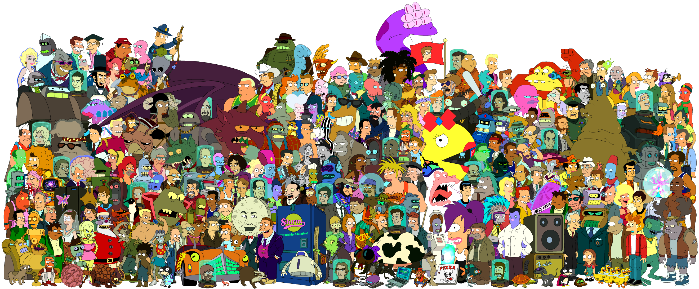

Bienvenido a Futurama Fan Site
Sumérgete en el mundo futurista y humorístico de Futurama, la serie animada creada por Matt Groening.
"Futurama" es una serie animada que sigue a Phillip Fry, un repartidor de pizza que se congela criogénicamente en 1999 y despierta en el año 3000, encontrándose en un mundo futurista de tecnología avanzada y seres peculiares.